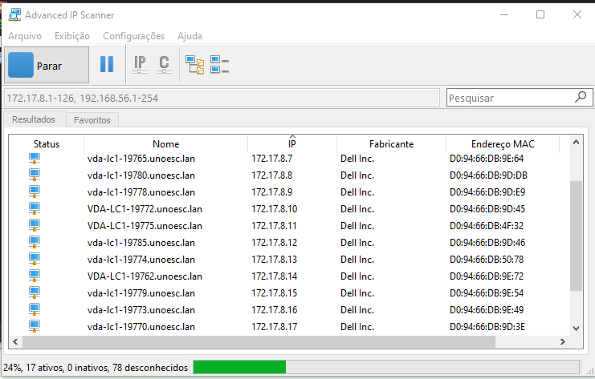
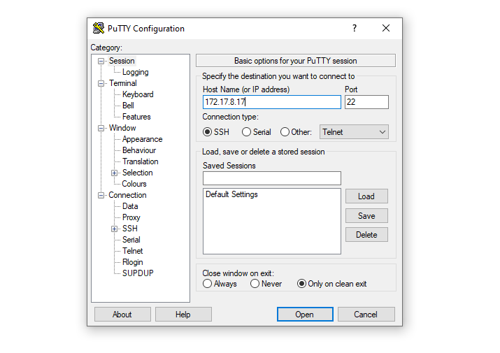
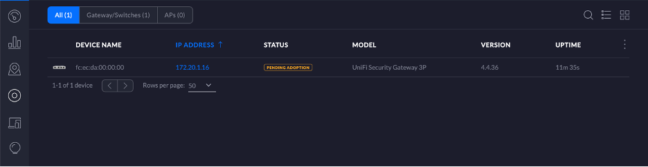

No balanço da rede, você navega no conhecimento
Como adotar um dispositivo UniFI por SSH
- Conecte o dispositivo em uma porta livre de seu Switch
- Verifique o IP que foi atribuido ao dispositivo

- Abra o Putty e entre com o IP do dispoitivo

- Entre com o seguinte comando no terminal
- O dispoitivo irá aparecer para adoção no Controller. Clique em apopt para adotar

Para mais informações, consulte este tutorial